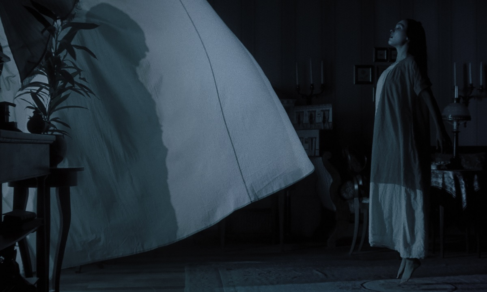
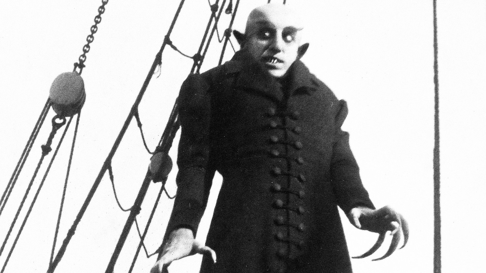

Nosferatu, inaugura la reinvención del cine gótico
El terror gótico está de vuelta de la mano de Robert Eggers y 2 'nepobabys' y Willem Dafoe
La seducción es una enfermedad y un hechizo esotérico. Ya desde su prólogo, esta (largamente postergada) adaptación del clásico dirigido por F.W. Murnau en 1922 muestra la voluntad de ser una formulación operística del deseo y sus consecuencias, la repulsión como reverso de la atracción y, por descontado, el binomio placer/dolor. De ahí que, al contrario del Max Schreck del original y el Kinski del estimulante remake de Herzog, el vampiro aquí no sea una presencia insectil, sino una masa hercúlea, a menudo entre sombras: una fantasía con las formas de Bill Skarsgård. El gusano blanco que nos devora, pero nos colma, porque así lo ansiamos. "¿Es el Mal algo que viene de fuera, o que reside en nuestro interior?", se pregunta Ellen, tórrida Lily-Rose Depp, en uno de los momentos álgidos de esta película tan salvaje como disciplinada.
Lily-Rose Melody Depp deslumbra con su actuación
Las referencias a la cábala, a Agrippa y a Paracelso indican que Eggers conoce y respeta la inspiración ocultista del original, algo que habría hecho sonreír a Albin Grau, su productor. Eggers juega, se niega a ser etiquetado. Convierte su obra en una caja de resonancias entre el clásico seminal, la novela de Stoker (de la que era su adaptación bastarda e inconfesa), y, en consecuencia, la extraordinaria versión de Francis Ford Coppola, con la que se mide y cae de pie. De estas dos últimas, toma al profesor Von Franz, trasunto del Van Helsing, interpretado por Dafoe, quien, rizando el rizo, había sido Max Schreck en la curiosa 'La sombra del vampiro'.
En esta reinterpretación de Eggers, cada detalle parece ser una declaración de amor al cine expresionista y al terror clásico. Las sombras alargadas, los encuadres asfixiantes y los juegos de luz y penumbra evocan la estética inquietante del original, pero también le otorgan una dimensión renovada. Eggers no teme adentrarse en el terreno de lo metatextual, hilando referencias y homenajes con una maestría que hace de su película algo más que un simple tributo: es una obra que dialoga con su legado mientras construye una identidad propia. En este proceso, rescata al vampiro como símbolo del Otro, de lo extraño y perturbador que acecha tanto en lo sobrenatural como en las profundidades del alma humana.
Por otro lado, la elección de Willem Dafoe para encarnar a Von Franz subraya la intención de Eggers de explorar los límites entre realidad y ficción. Dafoe, que ya había interpretado a un Schreck ficticio en 'La sombra del vampiro', aporta una inquietante familiaridad que juega con la percepción del espectador. Su presencia es un eco deliberado de esa figura icónica que marcó el cine de terror, pero también una reinterpretación que abraza lo grotesco y lo humano. Eggers, fiel a su estilo, no ofrece respuestas fáciles ni lugares comunes, sino que convierte su película en una experiencia inmersiva, donde cada plano y cada diálogo se convierten en un laberinto que invita a perderse en sus múltiples capas de significado.
Robert Eggers reinventa Nosferatu con los valores de un siglo después
El director homenajea con gracia el febril veneno expresionista, pero su película da lo mejor de sí misma –el ritual pagano de los gitanos, las epilépticas posesiones de Ellen– cuando se desvía del camino marcado. Ahí está esa perturbadora, brutal escena climática, manifestación suprema del coito como petite mort, donde Eggers guiña un ojo al Zulawski de 'La posesión', al Buttgereit (otro alemán, claro) de 'Nekromantik 2' y… hasta al Aguirre de 'El gran amor del conde Drácula'. Puede que el Mal no gane siempre, pero siempre nos deja sedientos, con ganas de más, como esta notabilísima fusión de Arte y Ensayo y Cine Espectáculo.
Ficha Técnica
- Director: Robert Eggers
- Género: Terror, Gótico
- Estreno: 2025
- Protagonistas: Bill Skarsgård, Willem Dafoe
- Duración: 120 minutos